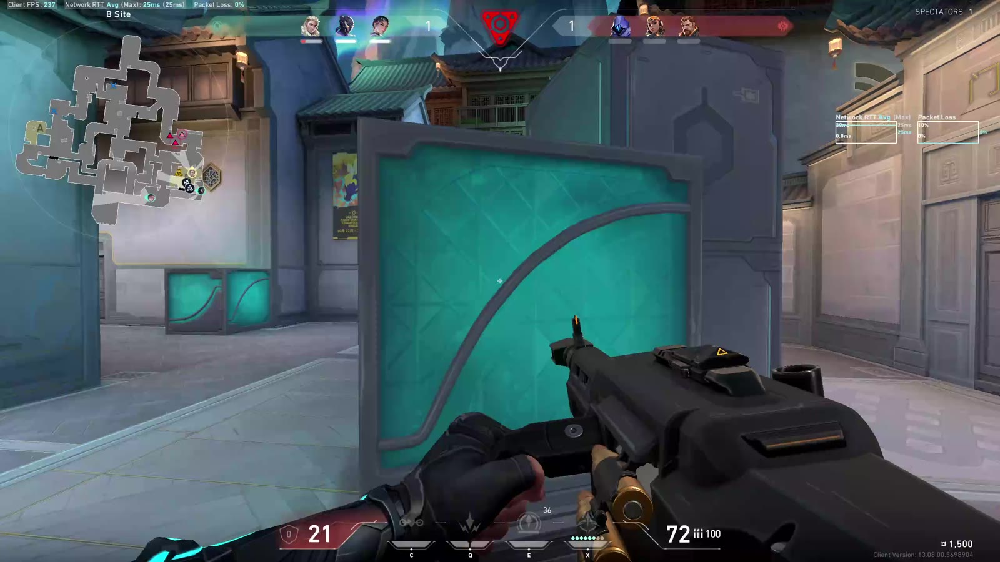
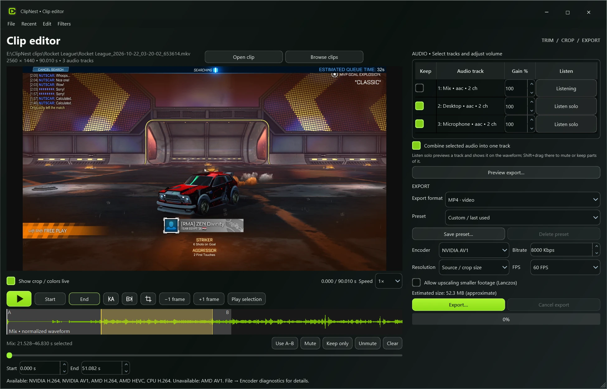

Sorted by the game you played.
Auto-detect games
ClipNest reads which game is running and saves the clip in a folder with its name, even for games that hide from screen capture, like Valorant.
- Valorant
- Helldivers 2
- Rocket League
- Chivalry 2
- Desktop
Built-in editor for your convenience
- Separate audio tracks
- Edit audio separately from video
- Combine two clips into one with zero delay between them
Trim to the frame, crop, or mute your mic for a moment and keep the game audio. Copy mode exports in seconds with no re-encode.

What you need
- System
- Windows 10/11, 64-bit
- Price
- Free
Three steps and you’re recording
- Install itRun the setup file from the latest release. No admin rights.
- Add FFmpegIn the editor, go to File → FFmpeg folder → the folder with
ffmpeg.exe. - PlayStart replay, then press your hotkey when something happens.